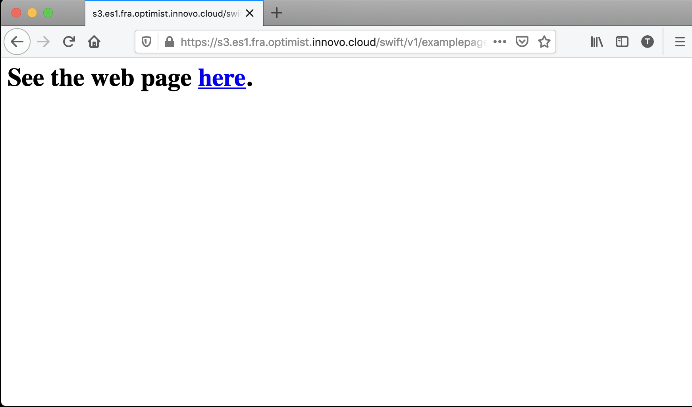
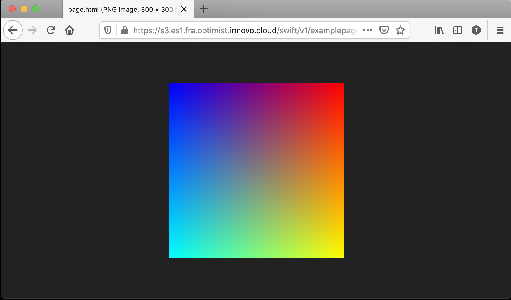
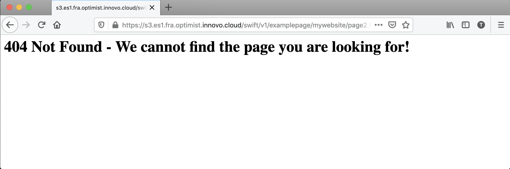

Swift - Serving Static Websites
Einführung
Mit Hilfe der Swift-CLI ist es möglich, die Daten in Containern als statische Website auszuliefern. Die folgende Anleitung beschreibt die wichtigsten Schritte, um damit zu beginnen, und enthält auch ein Beispiel.
Erste Schritte
Erstellen eines Containers
Zunächst erstellen wir einen Container mit dem Namen example-webpage, den wir als Basis für diese Anleitung verwenden werden:
$ swift post example-webpage
Den Container öffentlich lesbar machen
Als nächstes müssen wir sicherstellen, dass der Container öffentlich lesbar ist. Weitere Informationen zum Sichern von Containern und zum Festlegen von Bucket-Richtlinien finden Sie hier:
$ swift post -r '.r:*' example-webpage
Indexdatei der Seite setzen
Setzen Sie die Indexdatei. In diesem Fall wird index.html die Standarddatei sein, die angezeigt wird, wenn die Seite erscheint:
$ swift post -m 'web-index:index.html' example-webpage
Dateiliste aktivieren
Optional können wir auch die Dateiliste aktivieren. Wenn Sie mehrere Downloads bereitstellen müssen, ist es sinnvoll, die Verzeichnisliste zu aktivieren:
$ swift post -m 'web-listings: true' example-webpage
CSS für Dateilisten aktivieren
Aktivieren Sie ein benutzerdefiniertes Listing-Stylesheet:
$ swift post -m 'web-listings-css:style.css' example-webpage
Fehlerseiten einrichten
Schließlich sollten wir eine benutzerdefinierte Fehlerseite einbinden:
$ swift post -m 'web-error:404error.html' example-webpage
Beispiel-Webseite
Lassen Sie uns die Schritte rekapitulieren, die wir bis jetzt unternommen haben, um statische Webseiten zu aktivieren:
$ swift post example-webpage
$ swift post -r '.r:*' example-webpage
$ swift post -m 'web-index:index.html' example-webpage
$ swift post -m 'web-listings: true' example-webpage
$ swift post -m 'web-listings-css:style.css' example-webpage
$ swift post -m 'web-error:404error.html' example-webpage
Wenn die obigen Schritte abgeschlossen sind, können wir damit beginnen, unsere statische Webseite anzupassen. Das Folgende demonstriert eine schnelle Einrichtung unter Verwendung unseres Containers example-webpage
Anpassen der Seiten index.html, page.html und 404error.html
Dies wird als Startseite dienen, die einen Link zu einer sekundären Seite erstellt.
<!-- index.html -->
<html>
<h1>
See the web page <a href="mywebsite/page.html">here</a>.
</h1>
</html>
Die nächste Seite (page.html) zeigt ein Bild namens sample.png an:
<!-- page.html -->
<html>
<img src="sample.png">
</html>
Wir können auch benutzerdefinierte Fehlerseiten hinzufügen. Beachten Sie, dass derzeit nur die Fehler 401 (Nicht autorisiert) und 404 (Nicht gefunden) unterstützt werden. Das folgende Beispiel demonstriert die Erstellung einer 404-Fehlerseite:
<!-- 404error.html -->
<html>
<h1>
404 Not Found - We cannot find the page you are looking for!
</h1>
</html>
Hochladen der Dateien index.html und page.html
Nachdem die Inhalte der Dateien erstellt wurden, laden Sie die Dateien mit den folgenden Befehlen hoch:
$ swift upload beispiel-webseite index.html
$ swift upload beispiel-webseite meinewebseite/seite.html
$ swift upload beispiel-webseite-meine-website/beispiel.png
$ swift upload beispiel-webseite 404error.html
Betrachten der Website
Wenn alle oben genannten Schritte abgeschlossen sind, können wir nun unsere neu erstellte Website betrachten. Den Link zur Website finden Sie im Optimist Dashboard > Object Store > Containers über den abgebildeten Link.
Wenn Sie auf den Link klicken, wird unsere neu erstellte Website angezeigt:

Klicken Sie auf “here”, um zu der Seite zu navigieren, auf der wir unser Beispielbild hochgeladen haben:

Für den Fall, dass wir versuchen, zu einer Seite zu navigieren, die nicht existiert, wird unsere benutzerdefinierte 404-Seite angezeigt:
